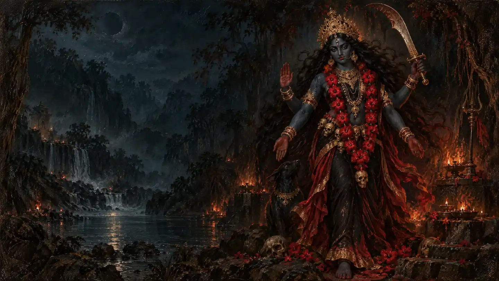

Goddess Kali
Om Kreem Kalikayai Namah
A short Kali mantra with her seed syllable, krīṃ.
Begin chantingMeaning & traditionॐ क्रीं कालिकायै नमः ॥
Om. Krīṃ, the seed syllable. Salutations to Kalika.अर्थ
ॐ। क्रीं (काली का बीज अक्षर)। माँ कालिका को नमस्कार है।
Oṃ krīṃ kālikāyai namaḥ
Om. Krīṃ, the seed syllable. Salutations to Kalika.Meaning
Om. Krīṃ, the seed syllable. Salutations to Kalika.
Om Kreem Kaalikaayai Namah
Om. Krīṃ, the seed syllable. Salutations to Kalika.Meaning (Hinglish)
Om. Kreem (Kaali ka beej akshar). Maa Kaalikaa ko namaskaar.
Kali mantra built on the seed syllable krīṃ, used in Shakta practice. Some traditions recommend learning beej (seed) mantras from a teacher; many devotees also chant them simply with devotion. English meanings are paraphrases; punctuation and Devanagari spelling are normalized.
Your daily mala
One chant, one bead.
Saved on this device. Return whenever you’re ready.
About the Om Kreem Kalikayai Namah
Om Kreem Kalikayai Namah is a short japa mantra to Kali, the fierce and protective form of the Mother. Krīṃ is her seed syllable. It is chanted on Kali Puja, in Navratri and by devotees seeking fearlessness.
Best time to chant: Evenings, Tuesdays and Saturdays, Amavasya, and on Kali Puja.
Benefits of the Om Kreem Kalikayai Namah
- A short Kali mantra with her seed syllable, krīṃ.
- Repeated recitation can be used as a practice of attention and devotion.
How to chant the Om Kreem Kalikayai Namah
- Read each line together with its meaning before beginning.
- Recite the complete prayer slowly, following the script you prefer.
- Use the counter after each complete recitation. Choose a comfortable number of repetitions.
Frequently asked questions
Where does Om Kreem Kalikayai Namah come from?
Kali mantra built on the seed syllable krīṃ, used in Shakta practice. Some traditions recommend learning beej (seed) mantras from a teacher; many devotees also chant them simply with devotion.
What does one count represent?
One count represents one complete recitation of the prayer displayed on this page. You can choose a short practice or count 108 repetitions.